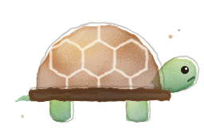
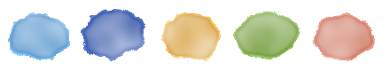

Deckelsmouk
Arrange by mouse. Animate by asking. Ship one file.
Every deck looks the same.
Yours
Same fades. Same flies. Same bullet points.
What if yours were painted?
Meet Deckelsmouk.
Plain HTMLthat you own, line by line
A real editordrag, snap, nudge, undo
Any LLM beside youlocal or in the cloud
1
The start page
It starts on paper.
Your decks, your templates, and a new talk in four choices.
localhost:4800
Deckelsmouk
Animated HTML presentations. Edit by hand, arrange by mouse, animate by asking your LLM companion.
+ New deck▾
Decks
Q3 review
Q3 reviewColleagues · 30 minDeckelsmouk
Deckelsmouk keynoteProduct keynote · 25 minLab meeting
Lab meetingField peers · 20 min
Everything starts here.
Every deck and template, on one painted page.
A new deck, in four choices.
A new deck, in four choices.
1Length
510152025304560
Sized to your slot.
2Audience
ColleaguesField peersProduct keynoteStudentsGeneral publicYour own words…
Shaped for the room.
3Template
Default
Paper
House style
Your house style.
4Draft
Paste an outline, an abstract, notes or a script…
PDFpaper.pdf
MDnotes.md
JPGmeadow.jpg
Optional: your LLM companion writes it.
Create deck
Your house style, in one drop.
Drop your PowerPoint template on the start page. Colours, fonts, logo and layouts come along.
POTXhouse-style.potx
Converted on your machine, in a second. No upload. Brand fonts travel inside the deck.
2
Editing by hand
Precise when you want it.
Everything you expect from a slide tool, on real HTML.
Edit like you always have.
Keynote◎ Product keynote
↶↷
T TextH Heading▣ Media◯ Shape⊞ Arrange
Saved◷▶ Play⬇ Export
Spring in the valley
img · 451 × 253
Fig. 1 · The valley in spring
Slide 3 · imgAsk your LLM companion… (⌘K)Ask
DesignAnimateSlideCode
572220
451253
100 %
0 px
1
2
3
4
1SlidesDrag to reorder.
2CanvasDrag, resize, type.
3InspectorDesign, motion, notes, code.
4Prompt barAsk your LLM companion. ⌘K.
Spring in the valley
img · 451 × 253
Fig. 1 · The valley in spring
Drag. Snap. Done.
Dragsnaps to edges
⇧ →nudges 10 px
Enteredits text
⌘Dduplicates
⌘Zundoes anything
3
Animation
Motion that looks expensive.
One attribute away, or anything JavaScript can draw.
One attribute away.
The inspector
DesignAnimateSlideCode
rise ▾
1
0.2 s
0.9 s
none ▾
▶ Play this slide
or
deck.html
<h2 class="h1"
data-anim="rise"
data-step="1"
data-delay="0.2">
Hello.
</h2>
This slide
Hello.
Click it together, or write it by hand. Same file either way.
15 effects, built in.
…and all at once.
fade
rise
drop
left
right
zoom
pop
blur
wipe
wipe-up
Revealreveal
word by wordwords
1,920count
pulse
Magic move.
Give two things the same name on consecutive slides. They glide.
data-magic="turtle"
Magic move.
Give two things the same name on consecutive slides. They glide.
data-magic="turtle"
Position and size come from this slide; the runtime does the rest.
Anything JavaScript can draw.
A slide script paints these drops, live. K pauses them.
Click: rain
4
The LLM companion
Then just ask.
Select anything. Say what you want. Watch it happen.
Select. Ask. Done.
Slide 4 · 3 objects
Bring these in one per click, the chart last, drawing itself.
Ask
✦ LLM companion local or cloud
Bring these in one per click, the chart last, drawing itself.
Reading slide 4 and the selection
Editing deck.html
· data-step 1, 2, 3 on the cards
· data-anim="draw" on the chart, slower
✓ Done: one undo step.
⌘Ztakes it all back, if you don't like it.
New effects, on request.
You ask
“Write an effect where the title bleeds in like ink on wet paper.”
animations.js// Bleeds in like ink on wet paper.
Deck.effect('bleed', {
from: {
opacity: 0,
filter: 'blur(24px) saturate(.2)',
scale: '1.04',
},
dur: 1700,
});
Ink.
data-anim="bleed"
Every effect in this deck was written this way.
Your LLM companion sees what you see.
Slide 4 · 3 objects#ask .ask-card288 × 146 at 70, 118
Your selectionits HTML and its box, in stage pixels
LLM
Local or cloudit edits only the deck's files
HTMLdeck.htmlJSanimations.js
Plain filesthat you can read and diff
One click awayTidy this slideAnimate this slideWrite notesNext slide from thisFit to audience
Audience · Colleagues
Pollinator visits rose 38 % in rewilded plots, 2024 → 2026
- 412 plots at 6 sites, counted over 3 seasons
- Mixed model, plot as random effect: p < 0.01
- Strongest for solitary bees: +52 %
- Mowing once a year: hay yield unchanged
- Open: winter survival, drift between sites
+38 %
visits per plot, rewilded vs mown, 2026
Example slide · illustrative data
Audience · Product keynote
+38 %
more bees where we let it grow wild.
Example slide · illustrative data
Same facts. Reworked for the room.
session.md
# About
A keynote on Deckelsmouk, 25 minutes, for a big room. Message: slides that move, made by hand and by asking.
# Decisions and preferences
Paper and watercolour, after Sosthène Weis. Serif headings.
No bullet lists. One idea per slide.
The bee survey stays marked as an example.
# Log
11-25 14:02 · Animate the cards one per click
11-25 14:09 · Slower, and the chart last
It remembers.
Every deck keeps its own notes. A new conversation starts from them, never from zero.
◷ History · the last 50 versions
14:09before asking the LLM companion
14:00while you edited
13:51when you opened it
5
Generation
Or let it write the whole thing.
From your material to a finished deck.
Drop a paper. Get a talk.
PDFpaper.pdf
MDnotes.md
Your LLM companion writes
Let it grow
Why bees?
The gap
Three sites
+38 %
Two seasons
Solitary bees
Mow less.
Count more.
Next steps
Thank you
Backup: methods
12 slides20 minutesyour templatespeaker notes
Then it's yours: edit by hand, or keep asking.
One file. Forever.
HTMLdeck.html
JSanimations.js
DIRassets/
HTML
slides · player · styles · fonts · pictures · video · animations
keynote.html
Also exports
PDFPowerPointLibreOffice
every slide fully built, with its notes
Email it. Put it on a stick. Open it in ten years.
Why a turtle?
Deckelsmouk is Luxembourgish for turtle.
It carries its whole home on its back.
So does every deck you make with it.

In the spirit of
Sosthène Weis 1872–1941
Watercolourist and architect from Luxembourg.
Thank you.
Start in 60 seconds
npm run dev
No install. Zero dependencies. Your LLM companion, local or cloud.
Keys worth knowing.
On stage
→ Spacenext step
←back, instantly
Ppresenter: notes, next, timer
Kpause all motion
Bblack screen
Ffullscreen
In the editor
⌘Kask the LLM companion
⌘↵play this slide
⌘Zundo, the LLM companion's too
Tnew text box
⌥ clickthe exact element underneath
⇧ dragmove in a straight line
Anything more is code with a name.
animations.js/* ===== Effects ===== */
// Settles like a sheet of paper laid on the table.
Deck.effect('settle', { from: { opacity: 0, translate: '0 -60px', rotate: '-4deg' }, dur: 1000 });
/* ===== Slide scripts ===== */
// Slide "paint": watercolour drops bloom and fade; step 1 makes it rain.
Deck.slide('paint', {
enter(ctx) { ctx.loop((t, dt) => { /* paint a frame */ }); },
step(n, ctx) { ctx.rate = n >= 1 ? 7 : 1.4; },
});